HepG2 Repressive DNase matched - State 12:CtcfO (n=66)
HepG2 Repressive DNase matched - State 12:CtcfO (n=66)
[
See group descriptions
]
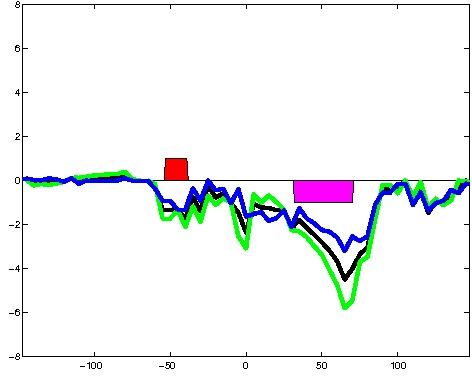
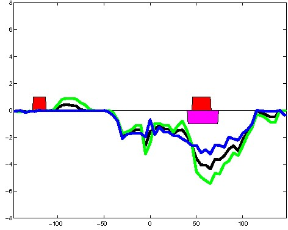
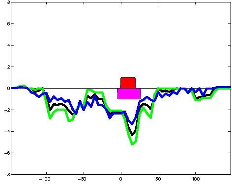
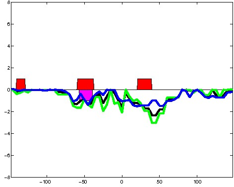
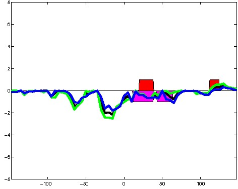
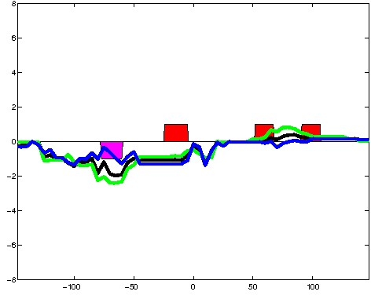
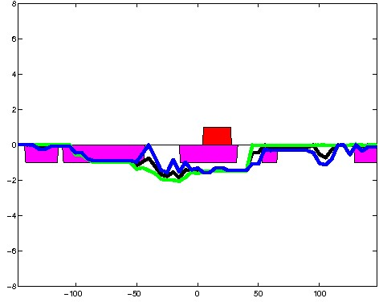
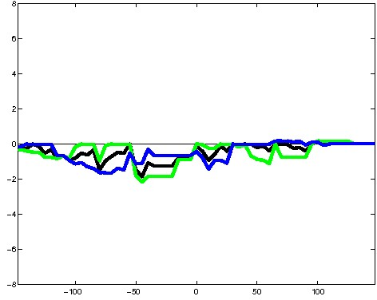
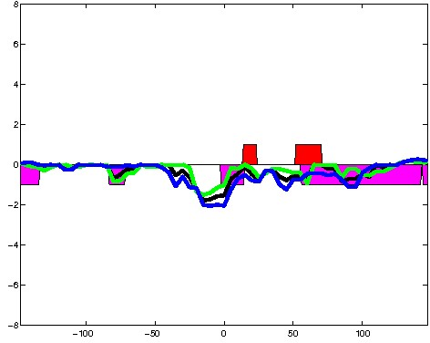
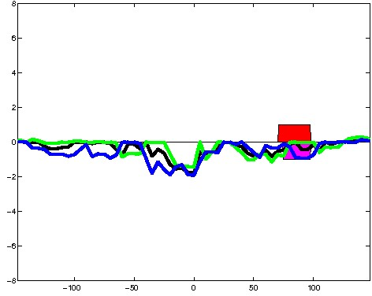
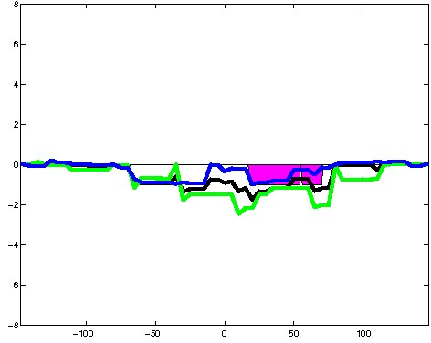
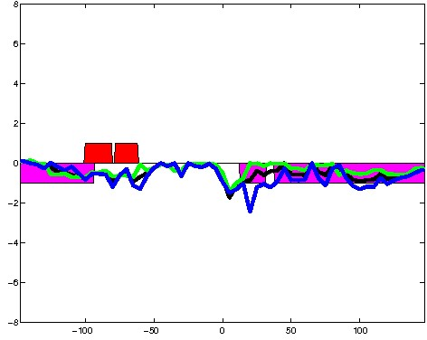
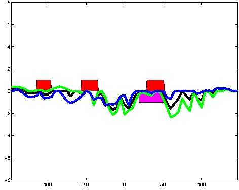
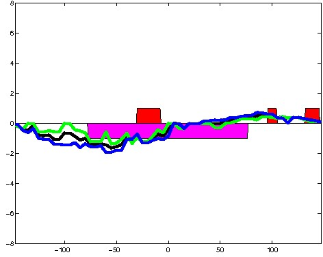
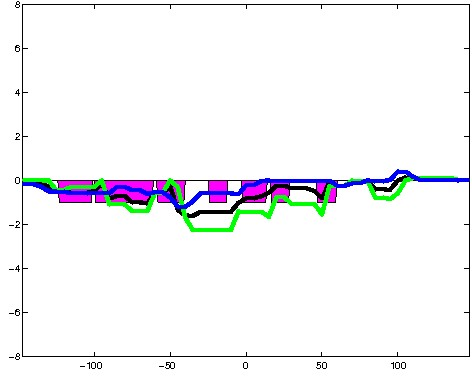
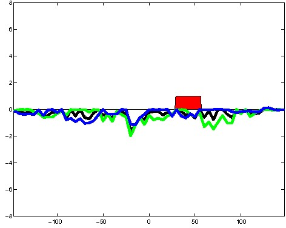
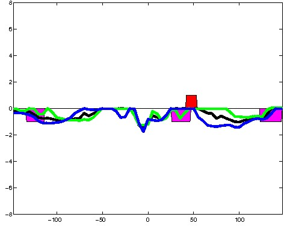
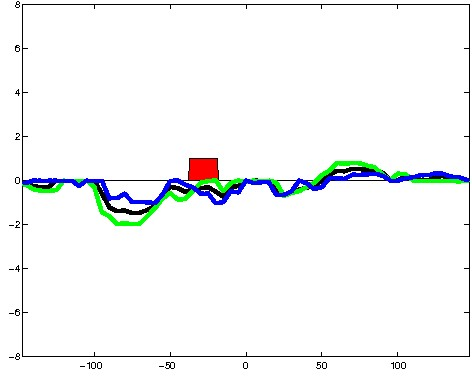
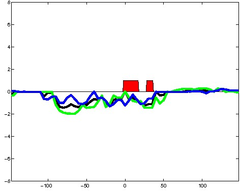
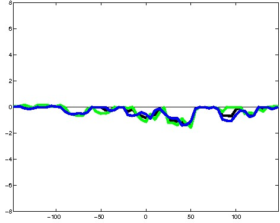
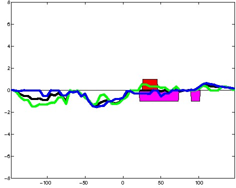
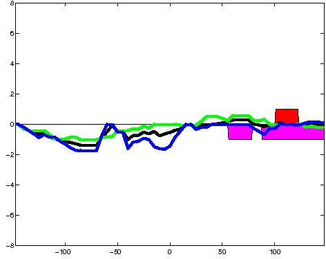
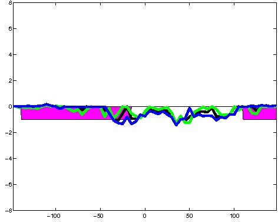
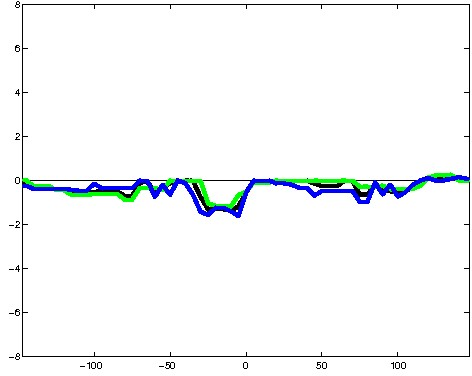
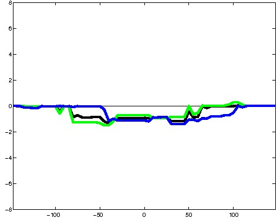
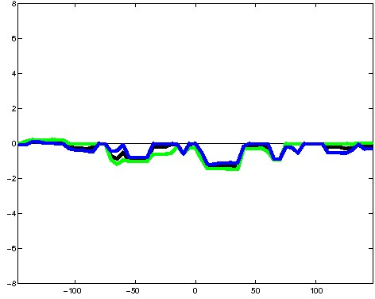
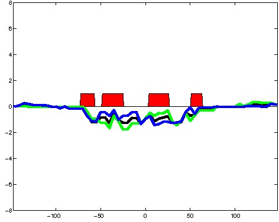
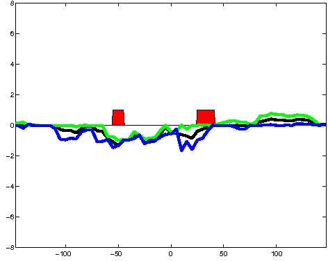
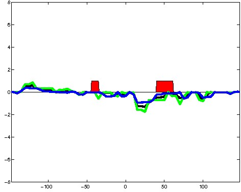
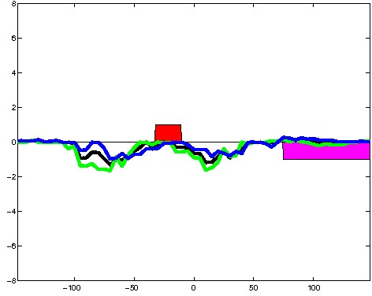
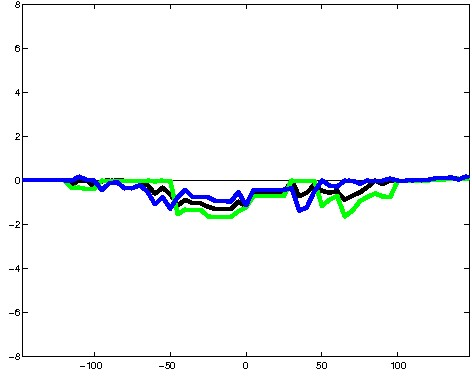
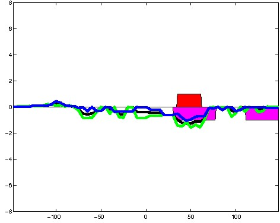
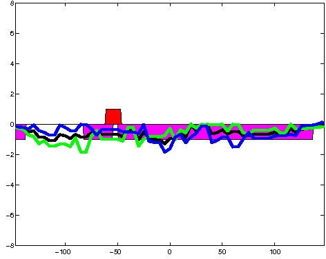
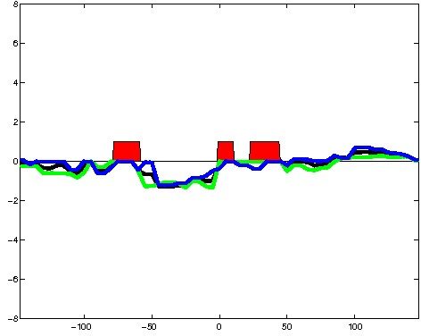
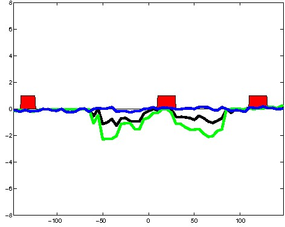
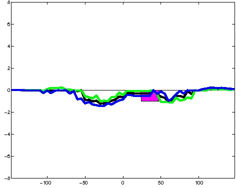
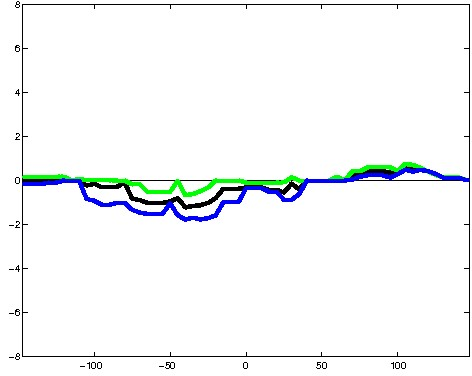
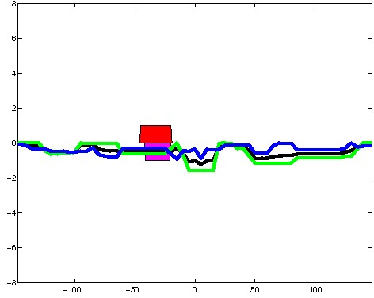
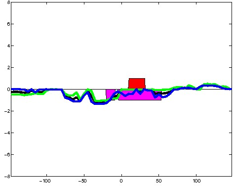
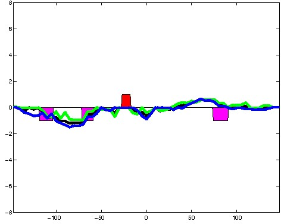
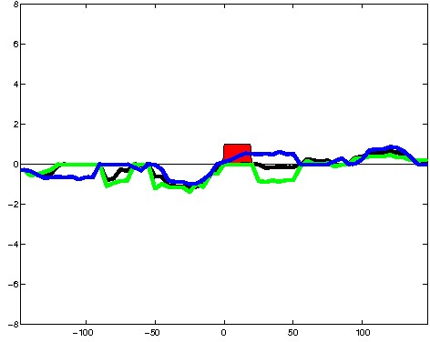
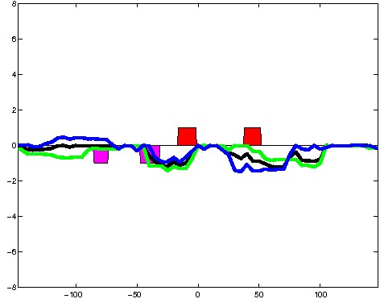
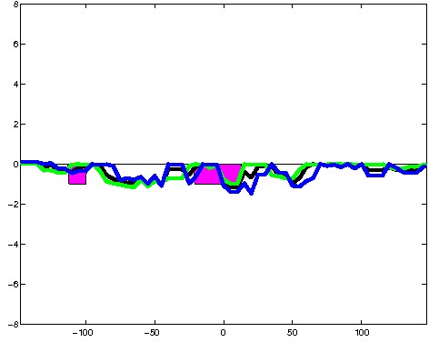
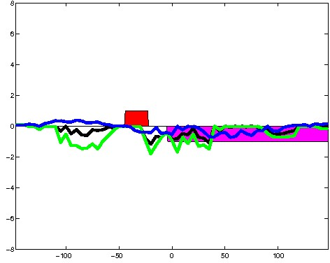
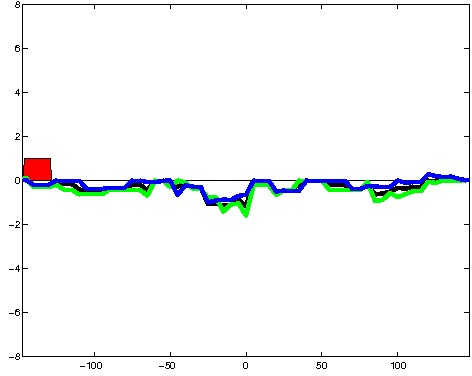
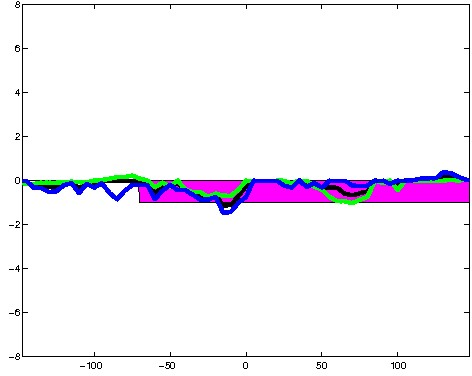
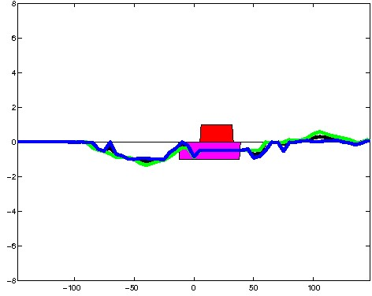
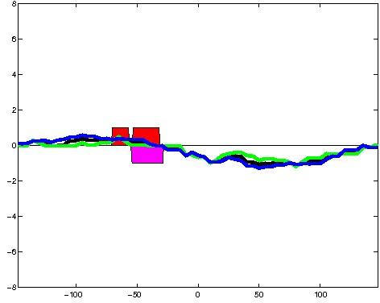
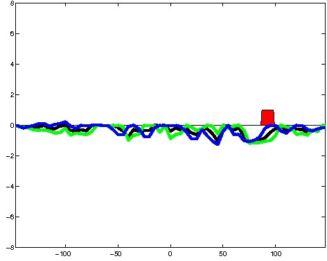
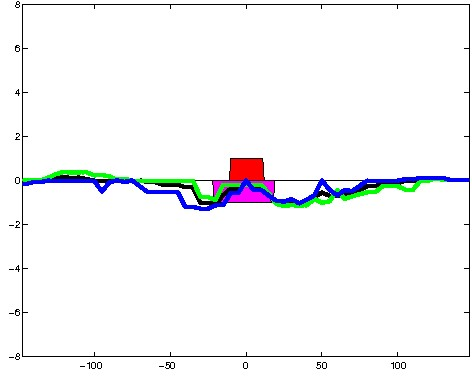
; picked in HepG2 (state 12:CtcfO, DNase); matched; chr22:45,371,509-45,371,803 (295bp)") 


